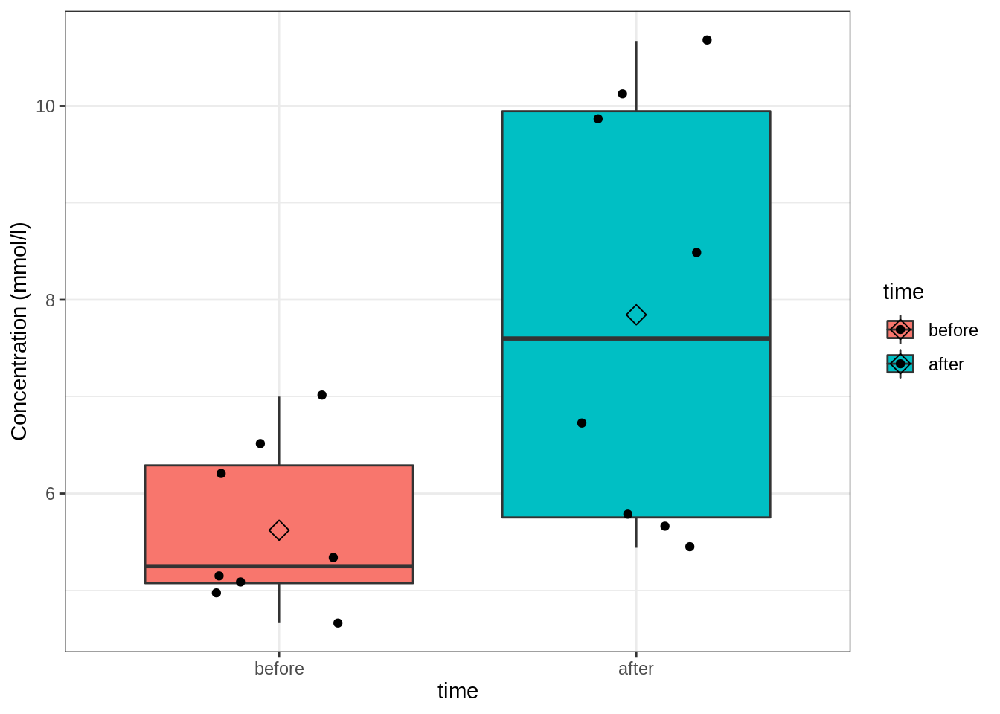
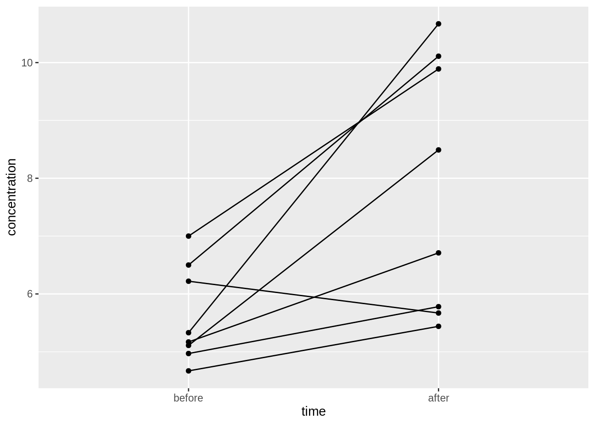
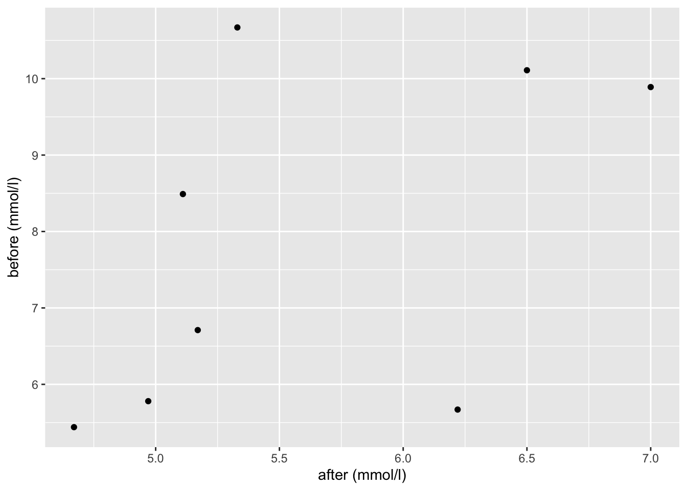
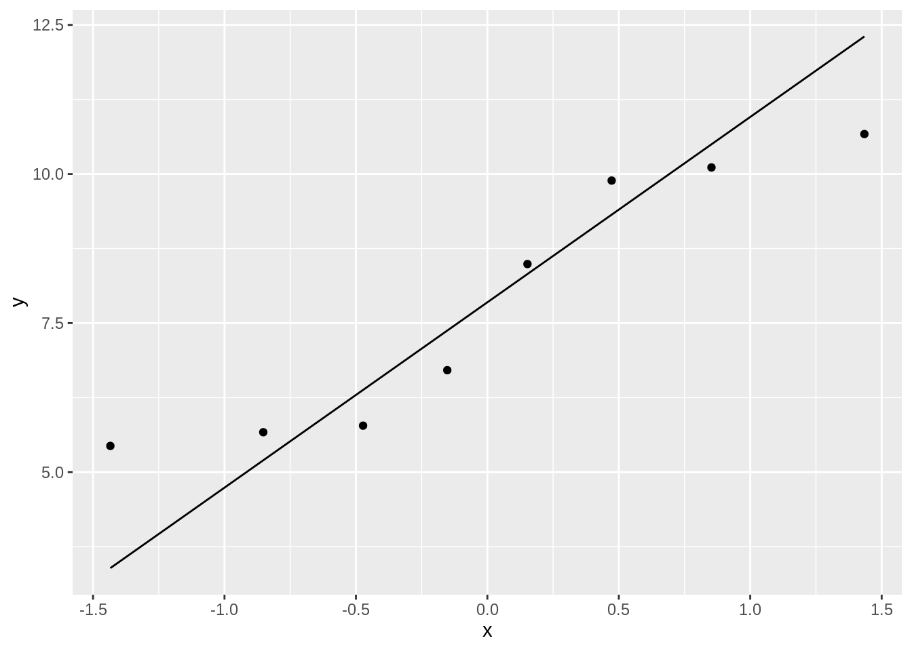

Aims
In this exercise, you will revisit the basics of statistical hypothesis testing.
You will acquire the skills
- to assess the assumptions of a one-sample and a paired t-test in data exploration.
- to conduct a paired t-test in R and to interpret the results.
- to conduct a one-sample t-test in R and to interpret the results.
The diabetes dataset
The diabetes dataset holds information on a small experiment with 8 patients that are subjected to a glucose tolerance test.
Patients had to fast for eight hours before the test. When the patients entered the hospital their baseline glucose level was measured (mmol/l).
Patients then had to drink 250 ml of a syrupy glucose solution containing 100 grams of sugar. Two hours later, their blood glucose level was measured again.
The data consist of three variables:
before: glucose concentration upon 8 hours of fasting (mmol/l)after: glucose concentration 2 hours after drinking glucose solution (mmol/l).patient: identifier for the patient
Research questions
The goal is to answer two research questions;
Is the average glucose level after the sugar intake different from the average glucose level before sugar intake?
Is the average glucose level of the patients two hours after the sugar intake higher than 7.8 mmol/L?
Import the data
First, load the required R libraries:
diabetes <- read_delim("https://raw.githubusercontent.com/statOmics/PSLS21/data/diabetes.txt", delim = " ")
## Rows: 8 Columns: 3
## ── Column specification ──────────────────────────────────────────────
## Delimiter: " "
## chr (1): patient
## dbl (2): before, after
##
## ℹ Use `spec()` to retrieve the full column specification for this data.
## ℹ Specify the column types or set `show_col_types = FALSE` to quiet this message.
Data exploration
We will start with a data exploration. Have a first look at the raw data. How is the data structured? Is this data tidy?
## Rows: 8
## Columns: 3
## $ before <dbl> 4.67, 4.97, 5.11, 5.17, 5.33, 6.22, 6.50, 7.00
## $ after <dbl> 5.44, 5.78, 8.49, 6.71, 10.67, 5.67, 10.11, 9.89
## $ patient <chr> "pat1", "pat2", "pat3", "pat4", "pat5", "pat6", "pat…
We have 8 patients, for which glucose concentrations were measured, before and after sugar intake.
Note, that the dataset is not in the tidy format. The glucose concentration variable is spread around 2 columns: before and after, while the “time” variable is encoded in the column names instead of in a dedicated column. Data in this form is also called wide data. Instead, we want to transform the data to a long format.
To tidy the data, we can use the gather() function to pivot the data. In this case, we want to “gather” the time (encoded in the column names before and after) and concentration variables (which is encoded in the actual values). The patient column should stay the same. We can specify this with the following syntax.
diabetes_tidy <- diabetes %>%
gather(key = "time", value = "concentration", -patient)
## Take a look at the new data
glimpse(diabetes_tidy)
## Rows: 16
## Columns: 3
## $ patient <chr> "pat1", "pat2", "pat3", "pat4", "pat5", "pat6"…
## $ time <chr> "before", "before", "before", "before", "befor…
## $ concentration <dbl> 4.67, 4.97, 5.11, 5.17, 5.33, 6.22, 6.50, 7.00…
To improve the visualizations below, we can also sligthly recode the time variable, so that the “before” level is the first one. We can do this by converting time to a factor.
diabetes_tidy <- diabetes_tidy %>%
mutate(
time = as.factor(time),
time = relevel(time, ref = "before")
)
We could visualize the data using boxplots. Note, however, that we lose the paired characteristic of the data with this visualization. Nevertheless, it is still a useful visualization to assess any differences in mean and variance between the two time points.
boxplot <- diabetes_tidy %>%
ggplot(aes(x = time, y = concentration, fill = time)) +
theme_bw() +
geom_boxplot(outlier.shape = NA) +
geom_jitter(width = 0.2) +
stat_summary(
fun = mean, geom = "point",
shape = 5, size = 3,
color = "black"
) +
ylab("Concentration (mmol/l)")
boxplot

We observe that the variability of the glucose levels are higher after than before the sugar intake. The difference plot also shows that glucose levels in the blood are higher for most of the patients two hours after the sugar intake. Only for one patient the glucose concentration two hours after treatment is lower.
To visualize the paired nature of the data, we can use a line plot, connecting the before and after points for each patient.
diabetes_tidy %>%
ggplot(aes(time, concentration)) +
geom_point() +
geom_line(aes(group = patient))

Question 1
Is the glucose level after 8 hours of fasting on average different from the glucose level two hours after intake of 100g of glucose?
As the data are paired, we can expect that the measurements before and after the glucose intake are correlated. We can illustrate this with a scatterplot.
Note that in this case, the non-tidy data is actually a more suitable format to visualize.
diabetes %>%
ggplot(aes(x = before, y = after)) +
geom_point() +
ylab("before (mmol/l)") +
xlab("after (mmol/l)")

cor(diabetes$before, diabetes$after, method = "spearman")
## [1] 0.5952381
Check the assumptions
The paired t-test has 2 assumptions:
The differences in glucose levels are independent of each other.
The differences in glucose levels are normally distributed.
The first assumption is met given the experimental design. Upon differencing the measurements before and after the glucose intake, we obtained one difference for each patient. As the patients were sampled at random from the population we can expect them to be independent.
Secondly, we assess if the differences are normally distributed.
We can calculate the differences for each patient using a group_by() + summarize() combination on the tidy data.
diabetes_diff <- diabetes_tidy %>%
group_by(patient) %>%
summarize(difference = diff(concentration))
diabetes_diff
diabetes_diff %>%
ggplot(aes(sample = difference)) +
geom_qq() +
geom_qq_line()

Based on the QQ-plot, we may assume that our data are normally distributed. As our assumptions are met we may continue with performing the paired t-test.
Hypothesis test
We will perform a paired t-test.
- The null hypothesis of the test is that the glucose levels before and two hours after glucose intake are on average equal.
- Which will be tested against the alternative hypothesis that the glucose levels before and two hours after the glucose intake are on average different.
paired_t <- t.test(diabetes$after,diabetes$before, paired = TRUE)
paired_t
##
## Paired t-test
##
## data: diabetes$after and diabetes$before
## t = 3.2834, df = 7, p-value = 0.01342
## alternative hypothesis: true difference in means is not equal to 0
## 95 percent confidence interval:
## 0.6222645 3.8252355
## sample estimates:
## mean of the differences
## 2.22375
Conclusion
There is on average an significant blood increase in the blood pressure upon administering 100g of sugar to patients (p = 0.01). The glucose levels two hours after administering 100g of glucose are on average 2.2 mmol/l higher than upon 8 hours of fastening (95% CI [0.6, 3.8]mmol/l).
Alternative solution: One-sample t-test on the difference
Since the data is paired, we can also simply calculate the differences in glucose level before and after sugar intake for each patient. We can then perform a one-sample t-test on these differences, testing whether they are significantly different from zero. This is equivalent to the paired t-test we performed above.
We can verify this with the analysis below
t.test(difference ~ 1, data = diabetes_diff, mu = 0)
##
## One Sample t-test
##
## data: difference
## t = 3.2834, df = 7, p-value = 0.01342
## alternative hypothesis: true mean is not equal to 0
## 95 percent confidence interval:
## 0.6222645 3.8252355
## sample estimates:
## mean of x
## 2.22375
Indeed, the output is equivalent to that of the paired t-test.
Question 2
Is the average glucose level two hours after sugar intake higher than the threshold of 7.8 mmol/l for pre-diabetes?
We can test this hypothesis using a one-sample t-test. Indeed we are interested to compare the average glucose level to a known threshold for pre-diabetes.
Assess the assumptions
Before we can perform a one sample t-test, we must check that the required assumptions are met!
- The observations are independent
- The glucose levels two hours after the treatment are normally distributed
The first assumption requires us to think about how the data were collected. Are there dependences in the data? The 8 glucose levels upon sugar intake are collected on 8 random patients so we can assume that the glucose levels 2 hours after sugar intake are independent.
We can assess the second assumption with a quantile-quantile plot. First we need to filter the data, so we only retain the values for the time == "after" level
diabetes_after <- diabetes_tidy %>%
filter(time == "after")
diabetes_after %>%
ggplot(aes(sample = concentration)) +
geom_qq() +
geom_qq_line()

The data seem to be nicely scattered around the quantile-quantile line (black line). We also do not observe large deviations in the plot.
So we will assume that our data is normally distributed. Note, that there are not many observations to assess normality.
Hypothesis test
Here, we will test if mean glucose level 2 hours after sugar intake is significantly higher than the threshold for pre-diabetes of 7.8 mmol/l. More specifically, we will test the null hypothesis;
\(H_0:\) the mean glucose level two hours after 100g of sugar intake is equal to 7.8 mmol/l
versus the alternative hypothesis;
\(H_1:\) the mean glucose level two hours after 100g of sugar intake is greater than 7.8 mmol/l
t_test_after <- t.test(concentration ~ 1,
data = diabetes_after,
mu = 7.8,
alternative = "greater",
conf.level = 0.95
)
t_test_after
##
## One Sample t-test
##
## data: concentration
## t = 0.057943, df = 7, p-value = 0.4777
## alternative hypothesis: true mean is greater than 7.8
## 95 percent confidence interval:
## 6.373627 Inf
## sample estimates:
## mean of x
## 7.845
Conclusion
When writing a conclusion on your research hypothesis, it is very important to be precise, concise, and complete.
An example of such a conclusion for our research question is given below:
We can conclude that the mean glucose level of patients two hours after 100g of glucose intake is not significantly higher than the threshold for pre-diabetes of 7.8 mmol/l (p = 0.48). The mean glucose level two hours after the intake of 100g of sugar equals 7.8 mmol/l (95% CI [6.4, ]).
As we have seen in the theory class, the 95% confidence interval can be interpreted as;
With 95% confidence we can conclude that the true average of glucose level of the patients in the population is above 6.37.
Note, that we only report a one sided confidence interval because we only test against the alternative hypothesis that the glucose level two hours after sugar intake is on average larger than the threshold for pre-diabetes of 7.8 mmol/l.
LS0tCnRpdGxlOiAiRXhlcmNpc2UgNS4xOiBIeXBvdGhlc2lzIHRlc3Rpbmcgb24gdGhlIGRpYWJldGVzIGV4YW1wbGUgLSBzb2x1dGlvbiIKYXV0aG9yOiAiTGlldmVuIENsZW1lbnQsIEplcm9lbiBHaWxpcyBhbmQgTWlsYW4gTWFsZmFpdCIKZGF0ZTogInN0YXRPbWljcywgR2hlbnQgVW5pdmVyc2l0eSAoaHR0cHM6Ly9zdGF0b21pY3MuZ2l0aHViLmlvKSIKLS0tCgojIEFpbXMKCkluIHRoaXMgZXhlcmNpc2UsIHlvdSB3aWxsIHJldmlzaXQgdGhlIGJhc2ljcyBvZiBzdGF0aXN0aWNhbCBoeXBvdGhlc2lzIHRlc3RpbmcuCgpZb3Ugd2lsbCBhY3F1aXJlIHRoZSBza2lsbHMKCjEuIHRvIGFzc2VzcyB0aGUgYXNzdW1wdGlvbnMgb2YgYSBvbmUtc2FtcGxlIGFuZCBhIHBhaXJlZCB0LXRlc3QgaW4gIGRhdGEgZXhwbG9yYXRpb24uCjIuIHRvIGNvbmR1Y3QgYSBwYWlyZWQgdC10ZXN0IGluIFIgYW5kIHRvIGludGVycHJldCB0aGUgcmVzdWx0cy4KMy4gdG8gY29uZHVjdCBhIG9uZS1zYW1wbGUgdC10ZXN0IGluIFIgYW5kIHRvIGludGVycHJldCB0aGUgcmVzdWx0cy4KCiMgVGhlIGRpYWJldGVzIGRhdGFzZXQKClRoZSBgZGlhYmV0ZXNgICBkYXRhc2V0IGhvbGRzIGluZm9ybWF0aW9uIG9uIGEgc21hbGwgZXhwZXJpbWVudCB3aXRoCjggcGF0aWVudHMgdGhhdCBhcmUgc3ViamVjdGVkIHRvIGEgZ2x1Y29zZSB0b2xlcmFuY2UgdGVzdC4KClBhdGllbnRzIGhhZCB0byBmYXN0IGZvciBlaWdodCBob3VycyBiZWZvcmUgdGhlIHRlc3QuCldoZW4gdGhlIHBhdGllbnRzIGVudGVyZWQgdGhlIGhvc3BpdGFsIHRoZWlyIGJhc2VsaW5lIGdsdWNvc2UgbGV2ZWwgd2FzIG1lYXN1cmVkIChtbW9sL2wpLgoKUGF0aWVudHMgdGhlbiAgaGFkIHRvIGRyaW5rIDI1MCBtbCBvZiBhIHN5cnVweSBnbHVjb3NlIHNvbHV0aW9uIGNvbnRhaW5pbmcgMTAwCmdyYW1zIG9mIHN1Z2FyLiAgVHdvIGhvdXJzIGxhdGVyLCB0aGVpciBibG9vZCBnbHVjb3NlIGxldmVsIHdhcyBtZWFzdXJlZCBhZ2Fpbi4KClRoZSBkYXRhIGNvbnNpc3Qgb2YgdGhyZWUgdmFyaWFibGVzOgoKLSBgYmVmb3JlYDogZ2x1Y29zZSBjb25jZW50cmF0aW9uIHVwb24gOCBob3VycyBvZiBmYXN0aW5nIChtbW9sL2wpCi0gYGFmdGVyYDogZ2x1Y29zZSBjb25jZW50cmF0aW9uIDIgaG91cnMgYWZ0ZXIgZHJpbmtpbmcgZ2x1Y29zZSBzb2x1dGlvbiAobW1vbC9sKS4KLSBgcGF0aWVudGA6IGlkZW50aWZpZXIgZm9yIHRoZSBwYXRpZW50CgojIyBSZXNlYXJjaCBxdWVzdGlvbnMKClRoZSBnb2FsIGlzIHRvIGFuc3dlciB0d28gcmVzZWFyY2ggcXVlc3Rpb25zOwoKMS4gSXMgdGhlIGF2ZXJhZ2UgZ2x1Y29zZSBsZXZlbCBhZnRlciB0aGUgc3VnYXIgaW50YWtlIGRpZmZlcmVudCBmcm9tIHRoZSBhdmVyYWdlIGdsdWNvc2UgbGV2ZWwgYmVmb3JlIHN1Z2FyIGludGFrZT8KCjIuIElzIHRoZSBhdmVyYWdlIGdsdWNvc2UgbGV2ZWwgb2YgdGhlIHBhdGllbnRzIHR3byBob3VycyBhZnRlciB0aGUgc3VnYXIgaW50YWtlIGhpZ2hlciB0aGFuIDcuOCBtbW9sL0w/CgojIyBJbXBvcnQgdGhlIGRhdGEKCkZpcnN0LCBsb2FkIHRoZSByZXF1aXJlZCBSIGxpYnJhcmllczoKCmBgYHtyLCBtZXNzYWdlPUZBTFNFLCB3YXJuaW5nPUZBTFNFfQpsaWJyYXJ5KHRpZHl2ZXJzZSkKYGBgCgpgYGB7cn0KZGlhYmV0ZXMgPC0gcmVhZF9kZWxpbSgiaHR0cHM6Ly9yYXcuZ2l0aHVidXNlcmNvbnRlbnQuY29tL3N0YXRPbWljcy9QU0xTMjEvZGF0YS9kaWFiZXRlcy50eHQiLCBkZWxpbSA9ICIgIikKYGBgCgojIERhdGEgZXhwbG9yYXRpb24KCldlIHdpbGwgc3RhcnQgd2l0aCBhIGRhdGEgZXhwbG9yYXRpb24uCkhhdmUgYSBmaXJzdCBsb29rIGF0IHRoZSByYXcgZGF0YS4gSG93IGlzIHRoZSBkYXRhIHN0cnVjdHVyZWQ/CklzIHRoaXMgZGF0YSAqdGlkeSo/CgpgYGB7cn0KZ2xpbXBzZShkaWFiZXRlcykKaGVhZChkaWFiZXRlcykKYGBgCgpXZSBoYXZlIDggcGF0aWVudHMsIGZvciB3aGljaCBnbHVjb3NlIGNvbmNlbnRyYXRpb25zIHdlcmUgbWVhc3VyZWQsIGJlZm9yZSBhbmQgYWZ0ZXIgc3VnYXIgaW50YWtlLgoKTm90ZSwgdGhhdCB0aGUgZGF0YXNldCBpcyBub3QgaW4gdGhlIHRpZHkgZm9ybWF0LiBUaGUgZ2x1Y29zZSBjb25jZW50cmF0aW9uCnZhcmlhYmxlIGlzIHNwcmVhZCBhcm91bmQgMiBjb2x1bW5zOiBgYmVmb3JlYCBhbmQgYGFmdGVyYCwgd2hpbGUgdGhlICJ0aW1lIgp2YXJpYWJsZSBpcyBlbmNvZGVkIGluIHRoZSBjb2x1bW4gbmFtZXMgaW5zdGVhZCBvZiBpbiBhIGRlZGljYXRlZCBjb2x1bW4uIERhdGEKaW4gdGhpcyBmb3JtIGlzIGFsc28gY2FsbGVkICp3aWRlKiBkYXRhLiBJbnN0ZWFkLCB3ZSB3YW50IHRvIHRyYW5zZm9ybSB0aGUgZGF0YQp0byBhICpsb25nKiBmb3JtYXQuCgpUbyB0aWR5IHRoZSBkYXRhLCB3ZSBjYW4gdXNlIHRoZSBgZ2F0aGVyKClgIGZ1bmN0aW9uIHRvCltwaXZvdF0oaHR0cHM6Ly9yNGRzLmhhZC5jby5uei90aWR5LWRhdGEuaHRtbCNwaXZvdGluZykgdGhlIGRhdGEuIEluIHRoaXMgY2FzZSwKd2Ugd2FudCB0byAiZ2F0aGVyIiB0aGUgYHRpbWVgIChlbmNvZGVkIGluIHRoZSBjb2x1bW4gbmFtZXMgYGJlZm9yZWAgYW5kCmBhZnRlcmApIGFuZCBgY29uY2VudHJhdGlvbmAgdmFyaWFibGVzICh3aGljaCBpcyBlbmNvZGVkIGluIHRoZSBhY3R1YWwgdmFsdWVzKS4KVGhlIGBwYXRpZW50YCBjb2x1bW4gc2hvdWxkIHN0YXkgdGhlIHNhbWUuIFdlIGNhbiBzcGVjaWZ5IHRoaXMgd2l0aCB0aGUKZm9sbG93aW5nIHN5bnRheC4KCmBgYHtyfQpkaWFiZXRlc190aWR5IDwtIGRpYWJldGVzICU+JQogIGdhdGhlcihrZXkgPSAidGltZSIsIHZhbHVlID0gImNvbmNlbnRyYXRpb24iLCAtcGF0aWVudCkKCiMjIFRha2UgYSBsb29rIGF0IHRoZSBuZXcgZGF0YQpnbGltcHNlKGRpYWJldGVzX3RpZHkpCmRpYWJldGVzX3RpZHkKYGBgCgpUbyBpbXByb3ZlIHRoZSB2aXN1YWxpemF0aW9ucyBiZWxvdywgd2UgY2FuIGFsc28gc2xpZ3RobHkgcmVjb2RlIHRoZSBgdGltZWAgdmFyaWFibGUsIHNvIHRoYXQgdGhlICJiZWZvcmUiIGxldmVsIGlzIHRoZSBmaXJzdCBvbmUuIFdlIGNhbiBkbyB0aGlzIGJ5IGNvbnZlcnRpbmcgYHRpbWVgIHRvIGEgZmFjdG9yLgoKYGBge3J9CmRpYWJldGVzX3RpZHkgPC0gZGlhYmV0ZXNfdGlkeSAlPiUKICBtdXRhdGUoCiAgICB0aW1lID0gYXMuZmFjdG9yKHRpbWUpLAogICAgdGltZSA9IHJlbGV2ZWwodGltZSwgcmVmID0gImJlZm9yZSIpCiAgKQpgYGAKCldlIGNvdWxkIHZpc3VhbGl6ZSB0aGUgZGF0YSB1c2luZyBib3hwbG90cy4gTm90ZSwgaG93ZXZlciwgdGhhdCB3ZSBsb3NlIHRoZQpwYWlyZWQgY2hhcmFjdGVyaXN0aWMgb2YgdGhlIGRhdGEgd2l0aCB0aGlzIHZpc3VhbGl6YXRpb24uIE5ldmVydGhlbGVzcywgaXQgaXMKc3RpbGwgYSB1c2VmdWwgdmlzdWFsaXphdGlvbiB0byBhc3Nlc3MgYW55IGRpZmZlcmVuY2VzIGluIG1lYW4gYW5kIHZhcmlhbmNlCmJldHdlZW4gdGhlIHR3byB0aW1lIHBvaW50cy4KCmBgYHtyfQpib3hwbG90IDwtIGRpYWJldGVzX3RpZHkgJT4lCiAgZ2dwbG90KGFlcyh4ID0gdGltZSwgeSA9IGNvbmNlbnRyYXRpb24sIGZpbGwgPSB0aW1lKSkgKwogIHRoZW1lX2J3KCkgKwogIGdlb21fYm94cGxvdChvdXRsaWVyLnNoYXBlID0gTkEpICsKICBnZW9tX2ppdHRlcih3aWR0aCA9IDAuMikgKwogIHN0YXRfc3VtbWFyeSgKICAgIGZ1biA9IG1lYW4sIGdlb20gPSAicG9pbnQiLAogICAgc2hhcGUgPSA1LCBzaXplID0gMywKICAgIGNvbG9yID0gImJsYWNrIgogICkgKwogIHlsYWIoIkNvbmNlbnRyYXRpb24gKG1tb2wvbCkiKQoKYm94cGxvdApgYGAKCldlIG9ic2VydmUgdGhhdCB0aGUgdmFyaWFiaWxpdHkgb2YgdGhlIGdsdWNvc2UgbGV2ZWxzIGFyZSBoaWdoZXIgYWZ0ZXIgdGhhbgpiZWZvcmUgdGhlIHN1Z2FyIGludGFrZS4gIFRoZSBkaWZmZXJlbmNlIHBsb3QgYWxzbyBzaG93cyB0aGF0IGdsdWNvc2UgbGV2ZWxzIGluCnRoZSBibG9vZCBhcmUgaGlnaGVyIGZvciBtb3N0IG9mIHRoZSBwYXRpZW50cyB0d28gaG91cnMgYWZ0ZXIgdGhlIHN1Z2FyIGludGFrZS4KT25seSBmb3Igb25lIHBhdGllbnQgdGhlIGdsdWNvc2UgY29uY2VudHJhdGlvbiB0d28gaG91cnMgYWZ0ZXIgdHJlYXRtZW50IGlzCmxvd2VyLgoKVG8gdmlzdWFsaXplIHRoZSBwYWlyZWQgbmF0dXJlIG9mIHRoZSBkYXRhLCB3ZSBjYW4gdXNlIGEgKipsaW5lIHBsb3QqKiwKY29ubmVjdGluZyB0aGUgYGJlZm9yZWAgYW5kIGBhZnRlcmAgcG9pbnRzIGZvciBlYWNoIHBhdGllbnQuCgpgYGB7cn0KZGlhYmV0ZXNfdGlkeSAlPiUKICBnZ3Bsb3QoYWVzKHRpbWUsIGNvbmNlbnRyYXRpb24pKSArCiAgZ2VvbV9wb2ludCgpICsKICBnZW9tX2xpbmUoYWVzKGdyb3VwID0gcGF0aWVudCkpCmBgYAoKCiMgUXVlc3Rpb24gMQoKSXMgdGhlIGdsdWNvc2UgbGV2ZWwgYWZ0ZXIgOCBob3VycyBvZiBmYXN0aW5nIG9uIGF2ZXJhZ2UgZGlmZmVyZW50IGZyb20gdGhlIGdsdWNvc2UgbGV2ZWwgdHdvIGhvdXJzIGFmdGVyIGludGFrZSBvZiAxMDBnIG9mIGdsdWNvc2U/CgpBcyB0aGUgZGF0YSBhcmUgcGFpcmVkLCB3ZSBjYW4gZXhwZWN0IHRoYXQgdGhlIG1lYXN1cmVtZW50cyBiZWZvcmUgYW5kIGFmdGVyIHRoZSBnbHVjb3NlIGludGFrZSBhcmUgY29ycmVsYXRlZC4KV2UgY2FuIGlsbHVzdHJhdGUgdGhpcyB3aXRoIGEgc2NhdHRlcnBsb3QuCgpOb3RlIHRoYXQgaW4gdGhpcyBjYXNlLCB0aGUgbm9uLXRpZHkgZGF0YSBpcyBhY3R1YWxseSBhIG1vcmUgc3VpdGFibGUgZm9ybWF0IHRvIHZpc3VhbGl6ZS4KCmBgYHtyfQpkaWFiZXRlcyAlPiUKICBnZ3Bsb3QoYWVzKHggPSBiZWZvcmUsIHkgPSBhZnRlcikpICsKICBnZW9tX3BvaW50KCkgKwogIHlsYWIoImJlZm9yZSAobW1vbC9sKSIpICsKICB4bGFiKCJhZnRlciAobW1vbC9sKSIpCmBgYAoKYGBge3J9CmNvcihkaWFiZXRlcyRiZWZvcmUsIGRpYWJldGVzJGFmdGVyLCBtZXRob2QgPSAic3BlYXJtYW4iKQpgYGAKCgojIyBDaGVjayB0aGUgYXNzdW1wdGlvbnMKClRoZSBwYWlyZWQgdC10ZXN0IGhhcyAyIGFzc3VtcHRpb25zOgoKMS4gVGhlIGRpZmZlcmVuY2VzIGluIGdsdWNvc2UgbGV2ZWxzIGFyZSBpbmRlcGVuZGVudCBvZiBlYWNoIG90aGVyLgoKMi4gVGhlIGRpZmZlcmVuY2VzIGluIGdsdWNvc2UgbGV2ZWxzIGFyZSBub3JtYWxseSBkaXN0cmlidXRlZC4KClRoZSBmaXJzdCBhc3N1bXB0aW9uIGlzIG1ldCBnaXZlbiB0aGUgZXhwZXJpbWVudGFsIGRlc2lnbi4KVXBvbiBkaWZmZXJlbmNpbmcgdGhlIG1lYXN1cmVtZW50cyBiZWZvcmUgYW5kIGFmdGVyIHRoZSBnbHVjb3NlIGludGFrZSwgd2Ugb2J0YWluZWQgb25lIGRpZmZlcmVuY2UgZm9yIGVhY2ggcGF0aWVudC4gQXMgdGhlIHBhdGllbnRzIHdlcmUgc2FtcGxlZCBhdCByYW5kb20gZnJvbSB0aGUgcG9wdWxhdGlvbiB3ZSBjYW4gZXhwZWN0IHRoZW0gdG8gYmUgaW5kZXBlbmRlbnQuCgpTZWNvbmRseSwgd2UgYXNzZXNzIGlmIHRoZSBkaWZmZXJlbmNlcyBhcmUgbm9ybWFsbHkgZGlzdHJpYnV0ZWQuCgpXZSBjYW4gY2FsY3VsYXRlIHRoZSBkaWZmZXJlbmNlcyBmb3IgZWFjaCBwYXRpZW50IHVzaW5nIGEgYGdyb3VwX2J5KClgICsKYHN1bW1hcml6ZSgpYCBjb21iaW5hdGlvbiBvbiB0aGUgdGlkeSBkYXRhLgoKYGBge3J9CmRpYWJldGVzX2RpZmYgPC0gZGlhYmV0ZXNfdGlkeSAlPiUKICBncm91cF9ieShwYXRpZW50KSAlPiUKICBzdW1tYXJpemUoZGlmZmVyZW5jZSA9IGRpZmYoY29uY2VudHJhdGlvbikpCmRpYWJldGVzX2RpZmYKYGBgCgpgYGB7cn0KZGlhYmV0ZXNfZGlmZiAlPiUKICBnZ3Bsb3QoYWVzKHNhbXBsZSA9IGRpZmZlcmVuY2UpKSArCiAgZ2VvbV9xcSgpICsKICBnZW9tX3FxX2xpbmUoKQpgYGAKCkJhc2VkIG9uIHRoZSBRUS1wbG90LCB3ZSBtYXkgYXNzdW1lIHRoYXQgb3VyIGRhdGEgYXJlIG5vcm1hbGx5IGRpc3RyaWJ1dGVkLgpBcyBvdXIgYXNzdW1wdGlvbnMgYXJlIG1ldCB3ZSBtYXkgY29udGludWUgd2l0aCBwZXJmb3JtaW5nIHRoZSBwYWlyZWQgdC10ZXN0LgoKIyMgSHlwb3RoZXNpcyB0ZXN0CgpXZSB3aWxsIHBlcmZvcm0gYSAqKnBhaXJlZCB0LXRlc3QqKi4KCi0gVGhlIG51bGwgaHlwb3RoZXNpcyBvZiB0aGUgdGVzdCBpcyB0aGF0IHRoZSBnbHVjb3NlIGxldmVscyBiZWZvcmUgYW5kIHR3byBob3VycyBhZnRlcgpnbHVjb3NlIGludGFrZSBhcmUgb24gYXZlcmFnZSBlcXVhbC4KLSBXaGljaCB3aWxsIGJlIHRlc3RlZCBhZ2FpbnN0IHRoZSBhbHRlcm5hdGl2ZSBoeXBvdGhlc2lzIHRoYXQgdGhlIGdsdWNvc2UgbGV2ZWxzIGJlZm9yZSBhbmQgdHdvIGhvdXJzIGFmdGVyIHRoZSBnbHVjb3NlIGludGFrZSBhcmUgb24gYXZlcmFnZSBkaWZmZXJlbnQuCgpgYGB7cn0KcGFpcmVkX3QgPC0gdC50ZXN0KGRpYWJldGVzJGFmdGVyLGRpYWJldGVzJGJlZm9yZSwgcGFpcmVkID0gVFJVRSkKcGFpcmVkX3QKYGBgCgoKIyMgQ29uY2x1c2lvbgoKVGhlcmUgaXMgb24gYXZlcmFnZSBhbiBzaWduaWZpY2FudCBibG9vZCBpbmNyZWFzZSBpbiB0aGUgYmxvb2QgcHJlc3N1cmUgdXBvbgphZG1pbmlzdGVyaW5nIDEwMGcgb2Ygc3VnYXIgdG8gcGF0aWVudHMgKHAgPSBgciByb3VuZChwYWlyZWRfdCRwLnZhbHVlLCAyKWApLgpUaGUgZ2x1Y29zZSBsZXZlbHMgdHdvIGhvdXJzIGFmdGVyIGFkbWluaXN0ZXJpbmcgMTAwZyBvZiBnbHVjb3NlIGFyZSBvbiBhdmVyYWdlIGByIHJvdW5kKHBhaXJlZF90JGVzdGltYXRlLDEpYCBtbW9sL2wgaGlnaGVyIHRoYW4gdXBvbiA4IGhvdXJzIG9mIGZhc3RlbmluZwooOTUlIENJIFtgciByb3VuZChwYWlyZWRfdCRjb25mLmludCwxKWBdbW1vbC9sKS4KCiMgQWx0ZXJuYXRpdmUgc29sdXRpb246IE9uZS1zYW1wbGUgdC10ZXN0IG9uIHRoZSBkaWZmZXJlbmNlCgpTaW5jZSB0aGUgZGF0YSBpcyBwYWlyZWQsIHdlIGNhbiBhbHNvIHNpbXBseSBjYWxjdWxhdGUgdGhlIGRpZmZlcmVuY2VzIGluCmdsdWNvc2UgbGV2ZWwgYmVmb3JlIGFuZCBhZnRlciBzdWdhciBpbnRha2UgZm9yIGVhY2ggcGF0aWVudC4gV2UgY2FuIHRoZW4KcGVyZm9ybSBhIG9uZS1zYW1wbGUgdC10ZXN0IG9uIHRoZXNlIGRpZmZlcmVuY2VzLCB0ZXN0aW5nIHdoZXRoZXIgdGhleSBhcmUKc2lnbmlmaWNhbnRseSBkaWZmZXJlbnQgZnJvbSB6ZXJvLiBUaGlzIGlzIGVxdWl2YWxlbnQgdG8gdGhlIHBhaXJlZCB0LXRlc3Qgd2UKcGVyZm9ybWVkIGFib3ZlLgoKV2UgY2FuIHZlcmlmeSB0aGlzIHdpdGggdGhlIGFuYWx5c2lzIGJlbG93CgpgYGB7cn0KdC50ZXN0KGRpZmZlcmVuY2UgfiAxLCBkYXRhID0gZGlhYmV0ZXNfZGlmZiwgbXUgPSAwKQpgYGAKCkluZGVlZCwgdGhlIG91dHB1dCBpcyBlcXVpdmFsZW50IHRvIHRoYXQgb2YgdGhlIHBhaXJlZCB0LXRlc3QuCgoqKioKCiMgUXVlc3Rpb24gMgoKSXMgdGhlIGF2ZXJhZ2UgZ2x1Y29zZSBsZXZlbCB0d28gaG91cnMgYWZ0ZXIgc3VnYXIgaW50YWtlCmhpZ2hlciB0aGFuIHRoZSB0aHJlc2hvbGQgb2YgNy44IG1tb2wvbCBmb3IgcHJlLWRpYWJldGVzPwoKV2UgY2FuIHRlc3QgdGhpcyBoeXBvdGhlc2lzIHVzaW5nIGEgKipvbmUtc2FtcGxlIHQtdGVzdCoqLgpJbmRlZWQgd2UgYXJlIGludGVyZXN0ZWQgdG8gY29tcGFyZSB0aGUgYXZlcmFnZSBnbHVjb3NlIGxldmVsIHRvIGEga25vd24gdGhyZXNob2xkIGZvciBwcmUtZGlhYmV0ZXMuCgojIyBBc3Nlc3MgdGhlIGFzc3VtcHRpb25zCgpCZWZvcmUgd2UgY2FuIHBlcmZvcm0gYSBvbmUgc2FtcGxlIHQtdGVzdCwgd2UgbXVzdCBjaGVjayB0aGF0IHRoZSByZXF1aXJlZAphc3N1bXB0aW9ucyBhcmUgbWV0IQoKMS4gVGhlIG9ic2VydmF0aW9ucyBhcmUgaW5kZXBlbmRlbnQKMi4gVGhlIGdsdWNvc2UgbGV2ZWxzIHR3byBob3VycyBhZnRlciB0aGUgdHJlYXRtZW50IGFyZSBub3JtYWxseSBkaXN0cmlidXRlZAoKVGhlIGZpcnN0IGFzc3VtcHRpb24gcmVxdWlyZXMgdXMgdG8gdGhpbmsgYWJvdXQgaG93IHRoZSBkYXRhIHdlcmUgY29sbGVjdGVkLgpBcmUgdGhlcmUgZGVwZW5kZW5jZXMgaW4gdGhlIGRhdGE/ClRoZSA4IGdsdWNvc2UgbGV2ZWxzIHVwb24gc3VnYXIgaW50YWtlIGFyZSBjb2xsZWN0ZWQgb24gOCByYW5kb20gcGF0aWVudHMgc28gd2UgY2FuIGFzc3VtZSB0aGF0IHRoZSBnbHVjb3NlIGxldmVscyAyIGhvdXJzIGFmdGVyIHN1Z2FyIGludGFrZSBhcmUgaW5kZXBlbmRlbnQuCgpXZSBjYW4gYXNzZXNzIHRoZSBzZWNvbmQgYXNzdW1wdGlvbiB3aXRoIGEgcXVhbnRpbGUtcXVhbnRpbGUgcGxvdC4gRmlyc3Qgd2UgbmVlZCB0byBmaWx0ZXIgdGhlIGRhdGEsIHNvIHdlIG9ubHkgcmV0YWluIHRoZSB2YWx1ZXMgZm9yIHRoZSBgdGltZSA9PSAiYWZ0ZXIiYCBsZXZlbAoKYGBge3J9CmRpYWJldGVzX2FmdGVyIDwtIGRpYWJldGVzX3RpZHkgJT4lCiAgZmlsdGVyKHRpbWUgPT0gImFmdGVyIikKYGBgCgpgYGB7cn0KZGlhYmV0ZXNfYWZ0ZXIgJT4lCiAgZ2dwbG90KGFlcyhzYW1wbGUgPSBjb25jZW50cmF0aW9uKSkgKwogIGdlb21fcXEoKSArCiAgZ2VvbV9xcV9saW5lKCkKYGBgCgpUaGUgZGF0YSBzZWVtIHRvIGJlIG5pY2VseSBzY2F0dGVyZWQgYXJvdW5kIHRoZSBxdWFudGlsZS1xdWFudGlsZQpsaW5lIChibGFjayBsaW5lKS4KV2UgYWxzbyBkbyBub3Qgb2JzZXJ2ZSBsYXJnZSBkZXZpYXRpb25zIGluIHRoZSBwbG90LgoKU28gd2Ugd2lsbCBhc3N1bWUgdGhhdCBvdXIgZGF0YSBpcyBub3JtYWxseQpkaXN0cmlidXRlZC4KTm90ZSwgdGhhdCB0aGVyZSBhcmUgbm90IG1hbnkgb2JzZXJ2YXRpb25zIHRvIGFzc2VzcyBub3JtYWxpdHkuCgojIyBIeXBvdGhlc2lzIHRlc3QKCkhlcmUsIHdlIHdpbGwgdGVzdCBpZiBtZWFuIGdsdWNvc2UgbGV2ZWwgMiBob3VycyBhZnRlciBzdWdhciBpbnRha2UgaXMgc2lnbmlmaWNhbnRseQpoaWdoZXIgdGhhbiB0aGUgdGhyZXNob2xkIGZvciBwcmUtZGlhYmV0ZXMgb2YgNy44IG1tb2wvbC4gTW9yZSBzcGVjaWZpY2FsbHksIHdlIHdpbGwgdGVzdCB0aGUgbnVsbCBoeXBvdGhlc2lzOwoKJEhfMDokIHRoZSBtZWFuIGdsdWNvc2UgbGV2ZWwgdHdvIGhvdXJzIGFmdGVyIDEwMGcgb2Ygc3VnYXIgaW50YWtlIGlzIGVxdWFsIHRvIDcuOCBtbW9sL2wKCnZlcnN1cyB0aGUgYWx0ZXJuYXRpdmUgaHlwb3RoZXNpczsKCiRIXzE6JCB0aGUgbWVhbiBnbHVjb3NlIGxldmVsIHR3byBob3VycyBhZnRlciAxMDBnIG9mIHN1Z2FyIGludGFrZSBpcyBncmVhdGVyIHRoYW4gNy44IG1tb2wvbAoKYGBge3J9CnRfdGVzdF9hZnRlciA8LSB0LnRlc3QoY29uY2VudHJhdGlvbiB+IDEsCiAgZGF0YSA9IGRpYWJldGVzX2FmdGVyLAogIG11ID0gNy44LAogIGFsdGVybmF0aXZlID0gImdyZWF0ZXIiLAogIGNvbmYubGV2ZWwgPSAwLjk1CikKdF90ZXN0X2FmdGVyCmBgYAoKIyMgQ29uY2x1c2lvbgoKV2hlbiB3cml0aW5nIGEgY29uY2x1c2lvbiBvbiB5b3VyIHJlc2VhcmNoIGh5cG90aGVzaXMsCml0IGlzIHZlcnkgaW1wb3J0YW50IHRvIGJlIHByZWNpc2UsIGNvbmNpc2UsIGFuZCBjb21wbGV0ZS4KCkFuIGV4YW1wbGUgb2Ygc3VjaCBhIGNvbmNsdXNpb24gZm9yIG91ciByZXNlYXJjaCBxdWVzdGlvbgppcyBnaXZlbiBiZWxvdzoKCldlIGNhbiBjb25jbHVkZSB0aGF0IHRoZSBtZWFuIGdsdWNvc2UgbGV2ZWwgb2YgcGF0aWVudHMgdHdvIGhvdXJzIGFmdGVyIDEwMGcgb2YgZ2x1Y29zZSBpbnRha2UgaXMgbm90IHNpZ25pZmljYW50bHkgaGlnaGVyIHRoYW4gdGhlIHRocmVzaG9sZCAgZm9yIHByZS1kaWFiZXRlcyBvZiA3LjggbW1vbC9sIChwID0gYHIgcm91bmQodF90ZXN0X2FmdGVyJHAudmFsdWUsMilgKS4KVGhlIG1lYW4gZ2x1Y29zZSBsZXZlbCB0d28gaG91cnMgYWZ0ZXIgdGhlIGludGFrZSBvZiAxMDBnIG9mIHN1Z2FyIGVxdWFscyBgciByb3VuZCh0X3Rlc3RfYWZ0ZXIkZXN0aW1hdGUsMSlgIG1tb2wvbCAoOTUlIENJIFtgciByb3VuZCh0X3Rlc3RfYWZ0ZXIkY29uZi5pbnQsMSlgXSkuCgpBcyB3ZSBoYXZlIHNlZW4gaW4gdGhlIHRoZW9yeSBjbGFzcywgdGhlIDk1JSBjb25maWRlbmNlCmludGVydmFsIGNhbiBiZSBpbnRlcnByZXRlZCBhczsKCldpdGggOTUlIGNvbmZpZGVuY2Ugd2UgY2FuIGNvbmNsdWRlIHRoYXQgdGhlIHRydWUgYXZlcmFnZSBvZiBnbHVjb3NlIGxldmVsIG9mIHRoZSBwYXRpZW50cyBpbiB0aGUgcG9wdWxhdGlvbiBpcyBhYm92ZSBgciByb3VuZCh0X3Rlc3RfYWZ0ZXIkY29uZi5pbnRbMV0sMilgLgoKTm90ZSwgdGhhdCB3ZSBvbmx5IHJlcG9ydCBhIG9uZSBzaWRlZCBjb25maWRlbmNlIGludGVydmFsIGJlY2F1c2Ugd2Ugb25seSB0ZXN0IGFnYWluc3QgdGhlIGFsdGVybmF0aXZlIGh5cG90aGVzaXMgdGhhdCB0aGUgZ2x1Y29zZSBsZXZlbCB0d28gaG91cnMgYWZ0ZXIgc3VnYXIgaW50YWtlIGlzIG9uIGF2ZXJhZ2UgbGFyZ2VyIHRoYW4gdGhlIHRocmVzaG9sZCBmb3IgcHJlLWRpYWJldGVzIG9mIDcuOCBtbW9sL2wuCg==